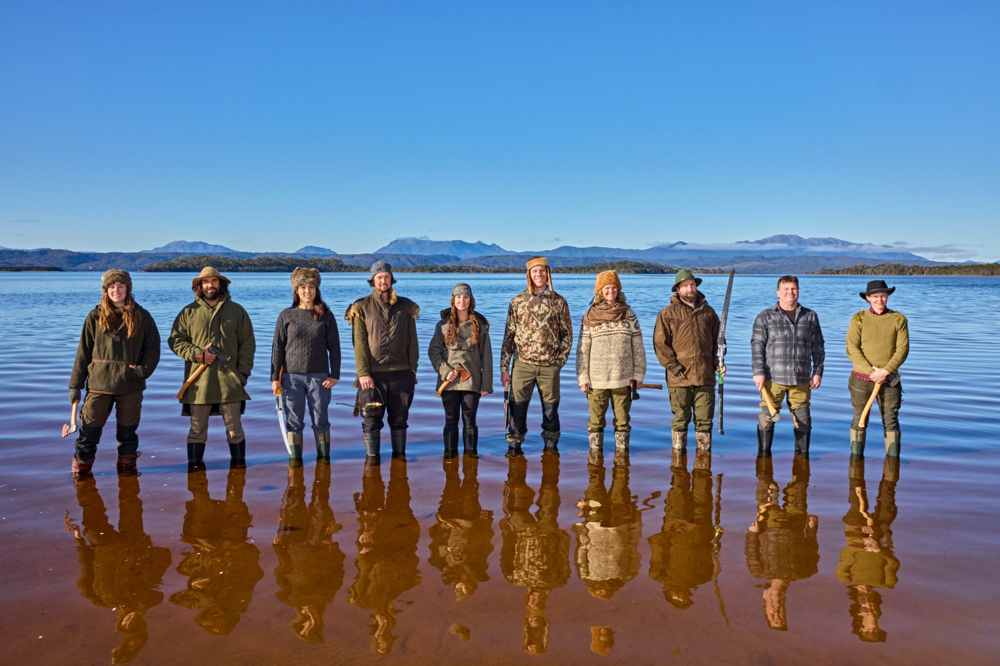
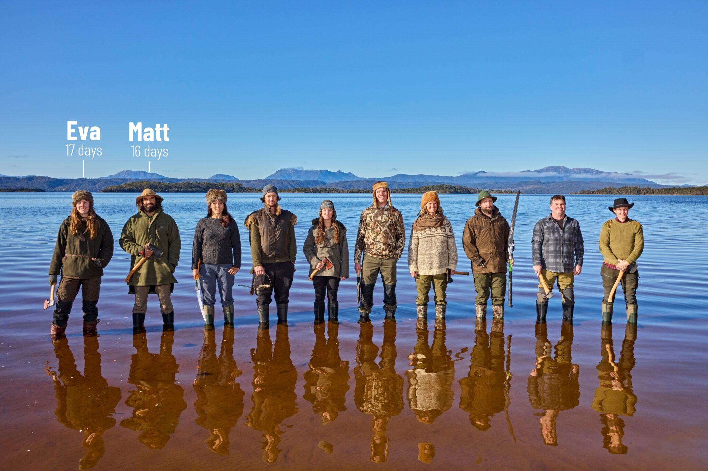
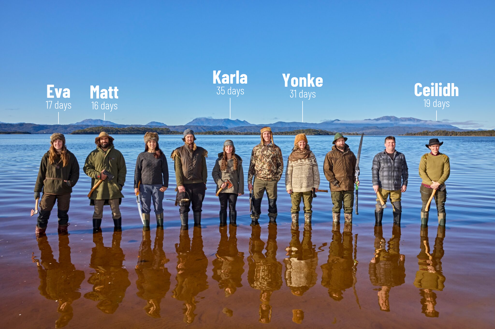
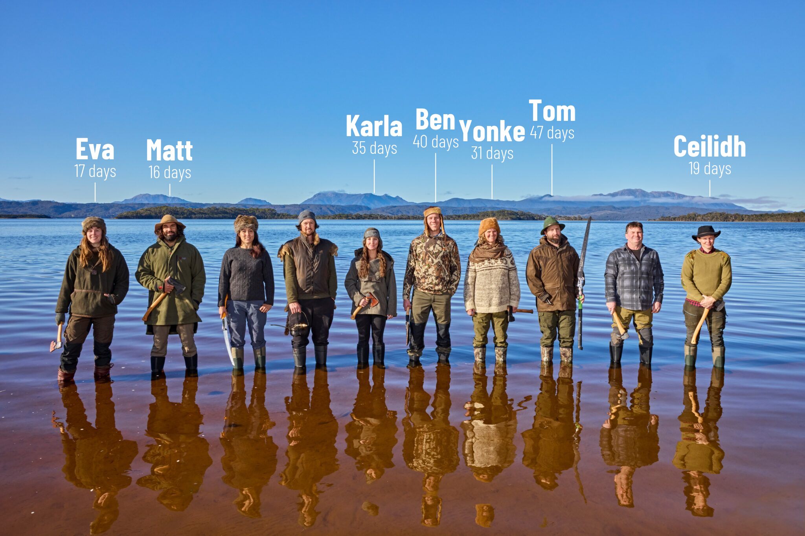
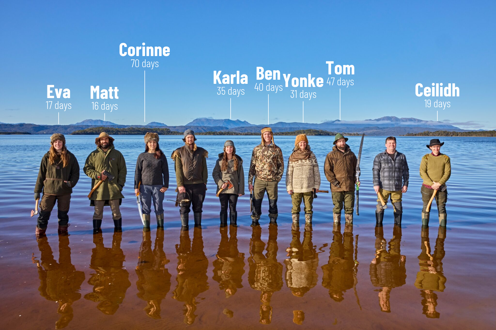
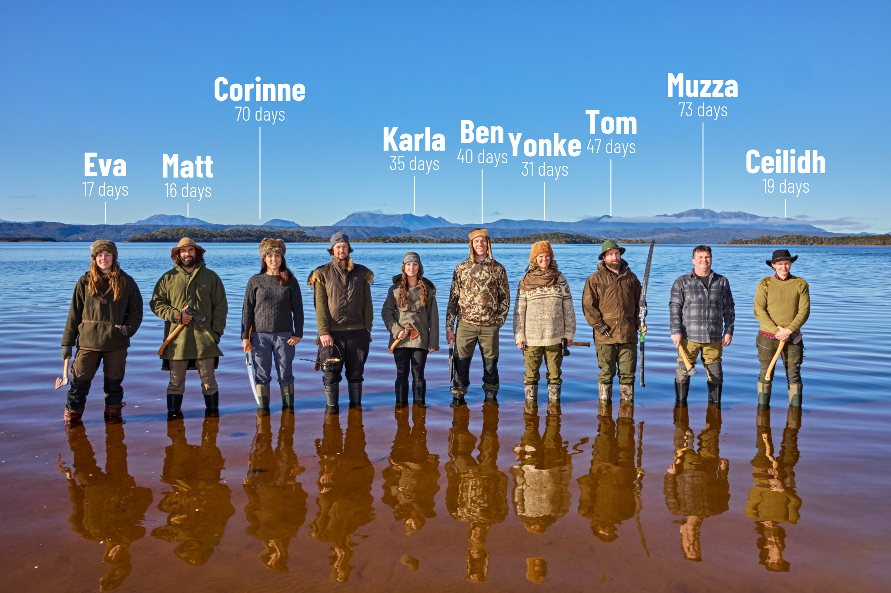
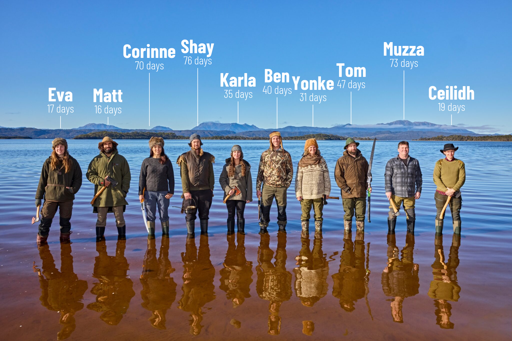

Alone Australia Season 3
In the third season of Alone Australia, ten survivalists were abandoned in the remote and unforgiving wilderness of Tasmania’s West Coast Ranges.
The diverse group of contestants, which for the first time included an equal number of men and women.
They had to rely on their unique skills, ranging from traditional Indigenous knowledge and professional trapping to bushcraft and foraging.
As they battled relentless rain, plunging temperatures, each participant was forced to dig deep, pushing their physical and mental limits.
Here’s how the season shaped up
Matt was the first to tap at a respectable 16 days
The second longest first tap out of the Australian and US series
The longest is 18 days - Lee in season 10
Matt tapped because he missed his family
Eva was the second person to tap at 17 days
She tapped due to not being able to procure food, felt like she exhausted all options fishing
Ceilidh was 3rd to tap at day 19
She tapped due to health reasons - Likely kidney infection from an untreated UTI
Yonke was 4th to tap at day 31
She tapped for personal reasons and not getting the experience she hoped for
Karla was the 5th tap at day 35
She tapped for personal reasons, ultimately missing her friends and family
Ben was medically pulled at day 40
Nothing was going to get Ben to tap, instead he was pulled during a medical check for starvation and low blood pressure
Tom tapped out on day 47
He couldn’t procure enough food, didn’t want to wait for medical to extract him
Corinne tapped out on day 70
She decided she didn’t have anything more to prove and ended her journey
Muzza was pulled from the game on day 73
The bushman was eating well but not quite enough and the medical team extracted him due to low blood pressure
And the winner for the season is Shay who survived 76 days in the brutal Tassie environment
Here is the top 10 players that survived the longest in Alone Australia
Shay survived longer than any other winner in Alone Australia
Shay, Muzza, and Corinne are the top three
Here are those in the top 20 out of 144 players from 11 US seasons and 3 AU seasons
Shay sits in 12th place
Muzza sits in equal 19th place
Follow me on Bluesky







02. Muzza - 73 days
03. Corinne - 70 days
04. Gina Chick - 67 days
05. Mike Atkinson - 64 days
06. Krzysztof - 64 days
07. Suzan - 63 days
08. Andreas - 57 days
09. Tamika - 53 days
10. Tom - 47 days
02. Callie Russell (S7) - 89 days
03. Zachary Fowler (S3) - 87 days
04. Carleigh Fairchild (S3) - 86 days
05. William Larkham Jr. (S11) - 84 days
06. Timber Cleghorn (S11) - 83 days
07. Kielyn Marrone (S7) - 80 days
07. Dub Paetz (S11) - 80 days
09. Megan Hanacek (S3) - 78 days
09. Juan Pablo Quinonez (S9) - 78 days
11. Jordan Jonas (S6) - 77 days
12. Shay (S3) - 76 days
13. Jim Baird (S4) - 75 days
13. Ted Baird (S4) - 75 days
13. Karie Lee Knoke (S9) - 75 days
16. Pete Brockdorff (S4) - 74 days
16. Sam Brockdorff (S4) - 74 days
16. Clay Hayes (S8) - 74 days
19. Dave Nessia (S3) - 73 days
19. Woniya Thibeault (S6) - 73 days
19. Biko Wright (S8) - 73 days
19. Muzza (S3) - 73 days
@danoehm